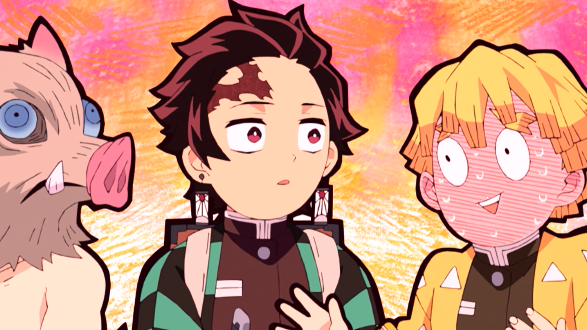
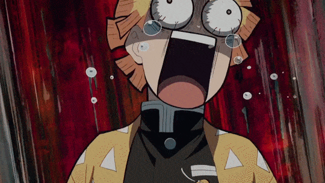
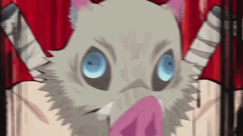
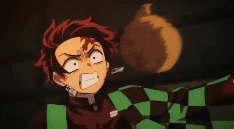
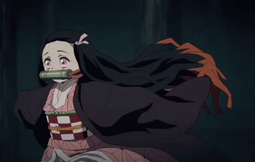

Risos e Diversão! Os 5 Momentos Mais Engraçados
Para uma dose de humor com nossa seleção dos cinco momentos mais hilariantes e cômicos em "Kimetsu no Yaiba". De reações exageradas a situações estranhas até as interações desajeitadas com a civilização, cada momento é garantia de sorrisos e risadas neste mundo repleto de perigos!
A Comédia de Zenitsu
Contexto: Zenitsu é conhecido por suas reações exageradas e engraçadas em situações de perigo. Seu medo extremo e suas exclamações hilárias proporcionam momentos de alívio cômico ao longo da série, como quando ele entra em pânico ao enfrentar os demônios. Descrição: Em várias cenas, Zenitsu é visto entrando em estado de pânico absoluto, gritando e implorando por misericórdia. Sua expressão facial e suas reações exageradas garantem risadas dos espectadores, aliviando a tensão das situações perigosas.
Inosuke e a Máscara de Porco
Contexto: Inosuke Hashibira usa uma máscara de porco o tempo todo, e sua ignorância sobre a vida civilizada proporciona momentos hilariantes. Descrição Inosuke muitas vezes confunde situações simples ou se envolve em interações sociais estranhas devido à sua falta de compreensão sobre a sociedade. Sua máscara de porco também é alvo de piadas, especialmente quando ele tenta se comunicar com animais.
As Reações de Tanjiro às Situações Estranhas
Contexto: Tanjiro, apesar de ser um guerreiro sério e determinado, muitas vezes é colocado em situações cômicas que destacam sua ingenuidade ou reações exageradas. Descrição: Tanjiro é frequentemente visto reagindo de maneira exagerada a eventos estranhos ou inesperados, como quando ele fica confuso com as peculiaridades de seus companheiros de equipe ou quando tenta entender o comportamento dos demônios. Suas expressões faciais e suas tentativas de resolver situações difíceis proporcionam momentos de comédia genuína.
Os Ataques de Nezuko
Contexto: Nezuko, apesar de ser uma demônio, muitas vezes é retratada de forma fofa e engraçada, especialmente quando está protegendo seu irmão Tanjiro. Descrição: Nezuko tem a tendência de atacar os demônios de maneiras inusitadas, como dar-lhes cabeçadas ou mordidas. Esses ataques são frequentemente acompanhados por efeitos sonoros engraçados e reações exageradas dos demônios, proporcionando momentos de comédia leve.